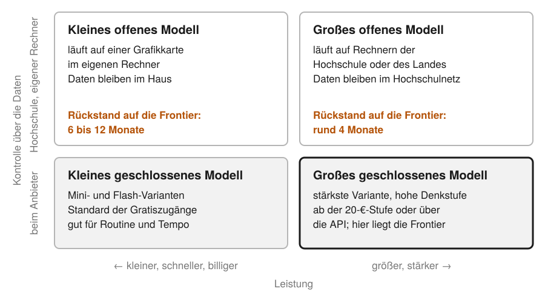
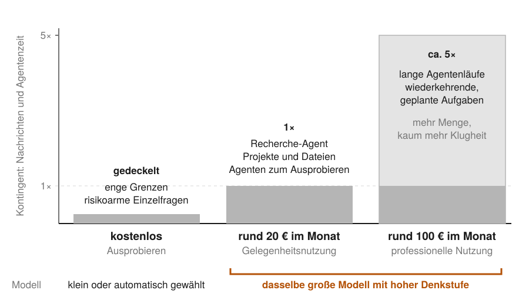

2 Grundbegriffe und vier Kompetenzen
Dr. Miriam Kessler lehrt Statistik für 300 Studierende der Psychologie und will zum Semesterstart einen Chatbot anbieten, der Fragen zu ihrem Skript beantwortet. Ein Kollege rät zu einem Agenten mit Internetzugang, ein anderer schwört auf seinen Prompt-Anfang: „Du bist ein Weltklasse-Statistiker, ich gebe dir 200 Dollar Trinkgeld.“ Beim Testen löst das Modell eine Regressionsaufgabe tadellos und verzählt sich danach bei den Buchstaben eines Fachbegriffs. Dann zeigt ihr eine Studentin eine Literaturangabe, die der Chatbot ihr genannt hat, mit Autor, Jahr und Titel. Im Bibliothekskatalog ist der Titel nicht zu finden, denn der Chatbot hat ihn erfunden. Kessler fragt sich nun, ob sie ihren Studierenden ein Werkzeug empfehlen kann, das erfundene Quellen genauso überzeugt vorträgt wie echte.
Die Szene ist aus Gesprächen in Workshops mit Lehrenden zusammengesetzt.
Wie sehr stimmen Sie den vier Aussagen zu? Jede Aussage wird an der Stelle im Kapitel aufgelöst, die sie beantwortet. Wer sich vorher festlegt, liest gezielter.
Wenn ein Modell die schwierigen Aufgaben Ihres Fachs löst, können Sie sich bei den leichteren erst recht auf es verlassen.
Auflösung in Kapitel 2.3.1
Ein Chatbot, der nur aus Ihrem Skript antworten soll, braucht keinen Agenten; es genügt ein Modell, das vor jeder Antwort passende Stellen aus dem Skript abruft.
Auflösung in Kapitel 2.3.2
Höflichkeit, Drohungen oder ein versprochenes Trinkgeld verbessern die Antworten eines Sprachmodells nicht zuverlässig.
Auflösung in Kapitel 2.4.4
Dass ein Chatbot Quellen erfindet, ist ein Programmfehler, den die nächsten Modellversionen abstellen.
Auflösung in Kapitel 2.5
- das 4D-Modell als Ordnung für die Arbeit mit KI erklären und Modell, Harness und Agent abgrenzen;
- mit der Jagged Frontier begründen, welche Aufgaben einer Lehrveranstaltung an die KI gehen, und dafür Setup (reines Sprachmodell, LLM; Sprachmodell mit Suche in eigenen Dokumenten, RAG; Agent), Modell und Arbeitsweise wählen (Delegation);
- einen Prompt als Auftrag mit Ziel, Grund, Material und Abnahmekriterium formulieren und verbreitete Prompt-Tricks als wirkungslos erkennen (Description);
- in Laiensprache erklären, warum Sprachmodelle halluzinieren, Ergebnisse prüfen und Verantwortung, Offenlegung und Energiebedarf einordnen (Discernment, Diligence).
Die Kernaussagen am Kapitelende sind nach diesen vier Zielen geordnet. Die Vertiefung zur Technik in Kapitel 2.7 setzen sie nicht voraus; sie kann übersprungen werden.
2.1 Mit KI arbeiten: vier Kompetenzen
Wer mit künstlicher Intelligenz (KI) arbeitet, trifft vier Arten von Entscheidungen. Vor dem Prompt, der Eingabe an die KI, steht die Frage, was überhaupt an die KI geht, dann die Beschreibung der Aufgabe, nach der Antwort die Prüfung des Ergebnisses und über allem die Verantwortung dafür. Ein Schema, das diese Schritte ordnet, macht aus einer Sammlung von Tipps eine Arbeitsweise, und weil es keine Werkzeuge nennt, übersteht es den nächsten Modellwechsel. Dieses Kapitel folgt dem Schema: Nach den Grundbegriffen in Kapitel 2.2 beantwortet jeder Abschnitt eine der vier Fragen, und die Technik im Inneren der Modelle steht am Ende als Vertiefung.
2.1.1 Das 4D-Modell
AI Fluency (etwa: Gewandtheit im Umgang mit KI) ist die Fähigkeit, effektiv, effizient, ethisch und sicher mit KI zu arbeiten (Dakan & Feller, 2025). Das Modell zerlegt sie in vier Kompetenzen, die 4 D, mit je drei Unterkompetenzen (Tabelle 2.1).
| Kompetenz | Leitfrage | Unterkompetenzen | Herkunft des Wortes |
|---|---|---|---|
| Delegation | Was übernimmt der Mensch, was die KI? | Ziel- und Aufgabenbewusstsein (goal and task awareness), Kenntnis der Werkzeuge (platform awareness), Aufgabenverteilung (task delegation) | lat. delegare, übertragen |
| Description | Wie sage ich der KI klar, was ich will? | Ergebnis beschreiben (product description), Zusammenarbeit beschreiben (process description), Verhalten festlegen (performance description) | lat. describere, umreißen, aufzeichnen |
| Discernment | Wie beurteile ich, was die KI liefert? | Ergebnis beurteilen (product discernment), Zusammenarbeit beurteilen (process discernment), Verhalten beurteilen (performance discernment) | lat. discernere, unterscheiden, trennen |
| Diligence | Wie setze ich KI verantwortlich und offen ein? | Sorgfalt beim Erzeugen (creation diligence), Offenlegung (transparency diligence), Prüfung vor der Freigabe (deployment diligence) | lat. diligentia, Sorgfalt, von diligere, hochachten, sorgsam auswählen |
Dakan und Feller nennen die vier D ausdrücklich vernetzte Kompetenzen, keine Reihenfolge (Dakan & Feller, 2025). In ihrem Kurs für Lehrende verbinden sie die vier aber zu zwei Schleifen (Dakan et al., 2025), und daraus baut dieses Buch einen Kreislauf, den die Abbildung unten zum Anklicken zeigt. Die äußere Schleife zwischen Delegation und Diligence ist strategisch und läuft einmal je Vorhaben: Was soll die KI übernehmen, und welche Pflichten folgen daraus? Sie läuft in beide Richtungen, denn eine Pflicht zur Offenlegung oder zur Prüfung verändert, was man sinnvoll abgibt. Die innere Schleife zwischen Description und Discernment dreht sich in jedem Arbeitsgang viele Male: beschreiben, erzeugen lassen, prüfen, nachbessern. Das Buch liest die vier D damit als Stufen eines Arbeitsablaufs; es folgt der Lehrpraxis der Autoren, nicht dem Wortlaut ihrer Definition.
Das Schema beantwortet nicht, wie viel KI eine Aufgabe verträgt. Zu viel Einsatz kostet Kompetenz und Qualität, zu wenig kostet Übung mit Werkzeugen, die die Studierenden im Beruf vorfinden; die Mitte zwischen beiden muss man für jede Aufgabe neu suchen, und der Kreislauf zeigt, an welcher Stelle die Entscheidung fällt. Was die Forschung über die Kosten des Auslagerns weiß, zeigt Kapitel 3.5.
2.1.2 Wie dieses Kapitel und das Buch das Schema nutzen
Im übrigen Buch endet jede der vier Rollen in Kapitel 4 mit einem Absatz, der den Kreislauf für diese Rolle durchläuft und die Stufe benennt, an der er am ehesten reißt; die Prompt-Sammlung in Anhang A liefert Material für die Stufe Description.
Artikel 4 der KI-Verordnung verpflichtet Hochschulen, die KI-Systeme bereitstellen, zu Maßnahmen für die KI-Kompetenz (AI literacy) ihres Personals, sagt aber nicht, worin diese Kompetenz besteht; der Digital-Omnibus vom Juli 2026 hat die Pflicht entschärft und die Definition nicht nachgeliefert (Europäisches Parlament und Rat, 2026; Europäisches Parlament und Rat der Europäischen Union, 2024) (Kapitel 5.5.2). Die Lücke füllen Kompetenzrahmen; einen Überblick über die Forschung zu AI Literacy gibt Pinski & Benlian (2024). Von fünf neueren Rahmen für die Hochschullehre(Tabelle 2.2) arbeitet dieses Buch mit AI Fluency von Rick Dakan und Joseph Feller: Es ordnet nach dem Arbeitsprozess, nennt keine Werkzeuge und führt als einziger die Verantwortung gegenüber Dritten als eigene Kompetenz. Alle fünf verlangen, dass Lernende KI-Ergebnisse kritisch beurteilen, kaum einer sagt, wie; die Prüfmethoden liefert dieses Buch dort nach, wo sie gebraucht werden (Kapitel 2.5). Die deutschen Definitionen sind eigene Übersetzungen der Fassung, die die irische Hochschulbehörde HEA (Higher Education Authority) herausgegeben hat; sie steht wie dieses Buch unter der Lizenz CC BY-SA 4.0.
| Rahmen | Zielgruppe | Ordnungsprinzip | Entstehung |
|---|---|---|---|
| AI Fluency (Dakan & Feller, 2025) | Hochschule | vier Kompetenzen entlang des Arbeitsprozesses, drei Formen der Zusammenarbeit | Lehrerfahrung zweier Hochschulen |
| KI-Kompetenzrahmen Hochschule (Feil et al., 2026) | Hochschule einschließlich Verwaltung | vier Bereiche: Technologie sowie Recht und Ethik als Basis, darauf Anwendung und Reflexion; drei Niveaustufen | Recherche und Kriterienkatalog im Verbundprojekt Digitale Lehre Hub Niedersachsen (DLHN) |
| AI Literacy Heptagon (Hackl et al., 2026) | Hochschule, fachbezogen anpassbar | sieben Dimensionen, vier Niveaustufen nach Bloom | Literaturreview nach PRISMA (Standard für systematische Übersichtsarbeiten) mit 27 Studien |
| AILit Framework (OECD & European Union, 2026) | Schule | vier Domänen (mit KI umgehen, gestalten, steuern, die KI-Entwicklung mitprägen), je Wissen, Fähigkeiten und Haltungen | EU und die Industriestaaten-Organisation OECD mit Fachleuten und öffentlicher Konsultation |
| Kompetenzen nach Gimpel et al. (2024) | Hochschule, Schwerpunkt Wirtschaftswissenschaften | Basiskompetenzen (AI Literacy, AI Reflection) und vier Felder vertiefter Kompetenzen | Konsortium von vier Hochschulen, Analyse von Curricula, Stellenmarkt und Literatur |
2.2 Grundbegriffe: Modell, Harness und Agent
Keine der vier Fragen lässt sich stellen, ohne Modell, Harness und Agent auseinanderzuhalten; für die didaktische Nutzung genügt es, die drei Begriffe ohne Formeln zu klären.
Welche der Fachbegriffe kennen Sie schon? Von Prompt bis Token, über Temperatur bis zur Suche in eigenen Dokumenten (RAG): Testen Sie sich selbst mit dem folgenden kleinen Spiel.
Ordnen Sie die Begriffe den korrekten Definitionen zu! Am Start wählen Sie zwischen Grundbegriffen und dem Level Fortgeschritten mit Agenten-Begriffen und einer Diagnose-Runde zu typischen Problemen wie Cognitive Debt, Sycophancy oder Prompt Injection.
2.2.1 Was ein Sprachmodell tut
Generative KI ist ein Teilgebiet der KI, also des Versuchs, menschliches Denken und Verhalten nachzubilden (Russell & Norvig, 2021); dieses Buch verwendet KI, generative KI (GenAI) und Sprachmodell weitgehend synonym. Ein Sprachmodell (Large Language Model, LLM) ist ein Rechensystem, das das nächste Wort in einer Wortkette vorhersagt, gestützt auf die Wörter davor (Jurafsky & Martin, 2025, Kap.7, S. 2); generativ heißt es, weil es auf diese Weise Texte erzeugt, die es vorher nicht gab. Dabei prüft es keine Wahrheit, sondern schreibt fort, was wahrscheinlich ist; daraus folgen seine Stärken ebenso wie seine erfundenen Quellen (Kapitel 2.5). Wie aus Text Zahlen und aus Zahlen das nächste Wort werden, zeigt die Vertiefung in Kapitel 2.7.1.
2.2.2 Was sich seit 2022 geändert hat
Wer 2022 mit ChatGPT gearbeitet hat und 2026 einem Agenten einen Rechercheauftrag gibt, erlebt zwei verschiedene Werkzeuge. Am Prinzip des Sprachmodells hat sich dabei wenig geändert; gewachsen ist vor allem die Schicht um das Modell herum. Sie hat Werkzeuge (tools) und Gedächtnis (memory) hinzugewonnen, und aus beiden folgt ein Drittes: Das Modell darf mehr Arbeitsschritte selbst wählen. Für diese Schicht setzt sich der Name Harness durch, für das, was beim Arbeiten aus Modell und Harness entsteht, der Name Agent. Die folgende Animation baut den Weg in acht Schritten auf.
Geben Sie zuerst Ihre Vorhersage ab und klicken Sie sich dann durch die Schritte.
Die drei Begriffe lassen sich an einem Bild auseinanderhalten, dem Fuhrwerk (Tabelle 2.3). Das Modell ist das Pferd, der Harness das Geschirr, der Agent das Gespann in Fahrt, und der Mensch sitzt auf dem Bock. Das Bild wirkt hier als Advance Organizer im Sinne Ausubels: eine Einführung auf höherer Abstraktionsebene, an die die folgenden Einzelbegriffe andocken können (Ausubel, 1960).
| Modell | Harness | Agent | |
|---|---|---|---|
| Was ist es? | das trainierte Netz: Text hinein, wahrscheinliche Fortsetzung heraus | die Software um das Modell: Werkzeuge, Gedächtnis, Schleife, Freigaben | eine Betriebsweise: Das Modell steuert seinen Ablauf selbst |
| Art | Bauteil | Bauteil | Verhalten zur Laufzeit |
| Im Bild | Pferd | Geschirr | Gespann in Fahrt |
| Wer baut es? | ein KI-Labor (OpenAI, Google, Anthropic …) | Hersteller (innerer Harness) und Nutzende (äußerer Harness) | entsteht, wenn beide zusammen laufen |
Daraus folgt: Jeder Agent braucht einen Harness, aber nicht jeder Harness macht einen Agenten. Ein Chatbot, der vor jeder Antwort fest Stellen aus dem Skript holt, hat einen Harness und bleibt doch ein fest programmierter Ablauf.
Ausgangspunkt: das Modell allein. Um 2022 war das Chatfenster die ganze Schnittstelle: Das Modell lieferte Text, Nachrechnen, Quellensuche und Prüfen blieben bei uns, und mit dem Fenster vergaß es das Gespräch. Im Bild des Fuhrwerks war es ein Pferd ohne Geschirr.
Erster Ermöglicher: Werkzeuge. Statt einer Antwort schreibt das Modell eine strukturierte Bitte, etwa „rechne 17 × 23“; ein gewöhnliches Programm führt sie aus und legt das Ergebnis zurück in den Text, den das Modell weiterschreibt. Dass Sprachmodelle selbst lernen können, wann sich ein solcher Aufruf lohnt, zeigten Schick et al. (2023). Seit Ende 2024 schließt das Model Context Protocol (MCP) beliebige Dienste nach demselben Muster an, so wie der USB-Anschluss Drucker und Kameras (Anthropic, 2024). Ein Werkzeug ist also ein Programm, das das Modell anfordern, aber nicht selbst ausführen kann (Vertiefung: Kapitel 2.7.3).
Zweiter Ermöglicher: Gedächtnis. Vor der Antwort kann eine Suche in eigenen Dokumenten, etwa Skript, Folien oder Prüfungsordnung, die passenden Stellen heraussuchen und dem Modell mit der Frage vorlegen, so wie eine Bibliothekarin die richtigen Seiten aufgeschlagen auf den Tisch legt; Fachleute nennen das Retrieval-Augmented Generation (RAG), etwa „abrufgestützte Erzeugung“ (Lewis et al., 2020). Die Kontextfenster (context windows), also die Textmenge, die das Modell bei einer Antwort auf einmal überblickt, sind von wenigen Seiten auf ganze Bücher gewachsen, und eine Anleitungsdatei trägt Regeln und Zwischenstände von einer Sitzung in die nächste (Vertiefung: Kapitel 2.7.4).
Die Folge: Autonomie im Vorgehen. Mit Werkzeugen und Gedächtnis wird aus einem Durchgang eine Schleife: Das Modell plant einen Schritt, ruft ein Werkzeug auf, liest das Ergebnis und plant den nächsten; Yao et al. (2023) nennen dieses Wechselspiel aus Denken und Handeln ReAct. Schluntz & Zhang (2024) ziehen daraus die Grenze, die für dieses Buch gilt: In einem Workflow folgen Modell und Werkzeuge vorgegebenen Pfaden, ein Agent steuert seinen Ablauf und seine Werkzeugnutzung selbst. Das Wort kommt vom lateinischen agere, handeln, in Gang bringen. Wie weit diese Selbststeuerung reicht, misst das gemeinnützige Prüfinstitut METR (Model Evaluation and Threat Research) als Zeithorizont (time horizon) , s. 2.3.1.
„Autonom“ verlangt eine Einschränkung: Das griechische autónomos heißt, sich selbst das Gesetz (nómos) geben, und das tut ein Agent nicht, denn das Ziel setzt der Mensch. Wir nennen solche Systeme deshalb teilautonom; die Norm zum automatisierten Fahren meidet das Wort „autonom“ aus demselben Grund und spricht von Automatisierungsstufen (SAE International, 2021). Wir sprechen von Autonomie im Vorgehen; „Autonomie der Lernenden“ (learner autonomy) meint dagegen die Fähigkeit, das eigene Lernen zu steuern (Holec, 1981).
Wie viel Autonomie ein Modell bekommt, entscheiden die Menschen, die es einsetzen, nicht das Modell. Morris et al. (2024) ordnen die Zusammenarbeit von Mensch und KI in sechs Stufen (Levels of Autonomy), von „keine KI“ bis zum vollständig selbstständigen Agenten, und betonen, dass für Bildung und Prüfungen auch die unterste Stufe ihren Platz behält.
Geben Sie zuerst Ihre Vorhersage ab und klicken Sie sich dann durch die Stufen.
Der Name für das Gewachsene: Harness. Anthropic definiert den Harness als das System, das ein Modell als Agent handeln lässt: Er nimmt Eingaben entgegen, ruft Werkzeuge auf und gibt Ergebnisse zurück (Grace et al., 2026). Das englische harness ist das Geschirr eines Zugpferds; dasselbe Pferd zieht mit anderem Geschirr einen Pflug oder eine Kutsche, und dasselbe Modell wird mit anderem Harness zum Lerntutor oder zum Karriereberater. Google spricht von einer Orchestrierungsschicht (orchestration layer) (Wiesinger et al., 2024), OpenAI beim Programmier-Agenten Codex von Harness (Bolin, 2026), Anthropic vom „Gehirn“ aus Modell und Harness (Martin et al., 2026); gemeint ist dasselbe Bauteil.
Geben Sie zuerst Ihre Vorhersage ab und klicken Sie sich dann durch die Schritte.
Der Harness ist zugleich der Regler der Autonomie: Welche Werkzeuge er anbietet, ob ein Werkzeug nur lesen oder auch schreiben darf und wo der Ablauf auf eine Freigabe wartet, legt den Handlungsspielraum des Modells fest. Wer den Harness pflegt, betreibt Harness Engineering; Hashimoto (2026), der den Begriff geprägt hat, versteht darunter, aus jedem Fehler eines Agenten eine dauerhafte Verbesserung seiner Umgebung zu machen, damit der Fehler nicht wiederkehrt.
Die Grenze zwischen Modell und Harness wandert allerdings: Jeder Harness enthält Annahmen darüber, was das Modell nicht allein kann, und bessere Modelle machen manche davon überflüssig (Martin et al., 2026); Logan Kilpatrick von Google DeepMind sagt, das Modell fresse den Harness (Sequoia Capital, 2026). Die Aufgaben bleiben, gleich wer sie erledigt: Jemand muss Werkzeuge anschließen, Kontext auswählen und Haltepunkte (checkpoints) setzen.
Die Fachbegriffe des ganzen Buches mit ihrer Herkunft stehen im Glossar.
2.3 Delegation: Was übernimmt die KI?
Delegation fragt, was der Mensch übernimmt und was die KI (Tabelle 2.1). Die Antwort hat drei Teile, die den Unterkompetenzen des Modells entsprechen: wissen, was die Modelle können (Kapitel 2.3.1), Setup und Modell kennen (Kapitel 2.3.2, Kapitel 2.3.3) und die Arbeit zwischen Mensch und KI verteilen (Kapitel 2.3.4). Den größten Teil des Harness liefert dabei der Hersteller; den Teil, den die Nutzenden selbst bauen, nennt Böckeler (2026) den äußeren Harness (outer harness): Anleitungsdateien, Skills (bei Bedarf geladene Gebrauchsanweisungen), eigene Wissensbasen und Prüfregeln. An diesem äußeren Harness gestalten Lehrende und Studierende; ein Übungstutor (Kapitel 6.2.2), ein Karriereberater (Kapitel 6.3.4) und eine Quellenanbindung mit Praxispartnern (Kapitel 6.3.5) laufen auf denselben großen Modellen und unterscheiden sich in Anleitung, Quellen und Grenzen. Unsere Rolle verschiebt sich dabei: Wir setzen das Ziel, legen fest, wo der Agent anhält, und prüfen, was zurückkommt; OpenAI fasst das in den Leitsatz „Humans steer. Agents execute.“ (Lopopolo, 2026).
2.3.1 Was die Modelle können und was nicht
Was Sprachmodelle können, ist sehr uneinheitlich und verändert sich schnell. Mollick und Kollegen sprechen von einer „Jagged Technological Frontier“, einer zerklüfteten Technik-Grenze: Zwei Aufgaben von ähnlicher Schwierigkeit für Menschen können auf verschiedenen Seiten der Grenze liegen; die eine löst die KI auf menschlichem Niveau oder besser, an der anderen scheitert sie (Dell’Acqua et al., 2023). In ihrem Experiment mit Consultants brachte KI bei den meisten von 18 Beratungsaufgaben große Vorteile; bei einer gezielt außerhalb der Grenze gewählten Aufgabe lagen die Consultants mit KI dagegen 19 Prozentpunkte seltener richtig als ohne (Dell’Acqua et al., 2023).
„Wenn ein Modell die schwierigen Aufgaben Ihres Fachs löst, können Sie sich bei den leichteren erst recht auf es verlassen.“
Auflösung: nein. Die Fähigkeiten der Modelle folgen nicht unserer Vorstellung von schwer und leicht. Zwei für Menschen ähnlich schwierige Aufgaben können auf verschiedenen Seiten der zerklüfteten Grenze liegen, und bei der Aufgabe jenseits der Grenze lagen die Consultants mit KI 19 Prozentpunkte seltener richtig als ohne. Wo die Grenze im eigenen Fach verläuft, zeigt nur der Test an den eigenen Aufgaben.
Zugleich wächst, was sich an die Modelle delegieren lässt. Ein anschauliches Maß dafür ist der Zeithorizont: die Dauer, die Fachleute für eine Aufgabe brauchen, die ein Modell in der Hälfte der Fälle löst (Kwa et al., 2025). Er stieg von rund 4 Minuten bei GPT-4 (März 2023) auf rund 17 Stunden bei einer frühen Fassung von Claude Mythos Preview (April 2026) und verdoppelte sich seit 2023 etwa alle 129 Tage, also gut alle vier Monate (METR, 2026). Den letzten Wert ordnet METR selbst als unsicher ein, weil die Testaufgaben über 16 Stunden nicht mehr für eine verlässliche Messung reichen.
Warum die Grenze so schnell wandert, beschreiben zwei Skalierungsgesetze (scaling laws) (Hoffmann et al., 2022; Kaplan et al., 2020; OpenAI, 2024; anschaulich bei Grootendorst, 2025a). Erstens werden Modelle verlässlich besser, je mehr Daten, Rechenleistung und Parameter ins Training fließen: Jede Verzehnfachung des Rechenaufwands senkt den Vorhersagefehler um etwa denselben Anteil (Kaplan et al., 2020), sofern Daten und Modellgröße im Gleichschritt wachsen (Hoffmann et al., 2022). Zweitens liefert ein fertig trainiertes Modell bessere Lösungen, wenn es vor der Antwort mehr „Denkzeit“ (test-time compute) für zusätzliche Rechenschritte erhält (OpenAI, 2024; Snell et al., 2024); auf diesem zweiten Gesetz beruhen die Reasoning-Modelle (Gottweis et al., 2025; Schwarcz et al., 2025). Wie bei einer Prüfung ist die Lernzeit einmal bezahlt, die Bearbeitungszeit fällt bei jeder Prüfung neu an; deshalb kosten Reasoning-Modelle je Antwort mehr. Trotzdem bleiben die Grenzkosten der Nutzung sehr niedrig, und personalisierte Lernangebote lassen sich kostengünstig skalieren (E. R. Mollick, 2025).
Wie schnell die Preise fallen, zeigt eine Auswertung von Epoch AI. Der GPQA Diamond (Graduate-Level Google-Proof Q&A, Fragen, die sich nicht ergoogeln lassen) ist eine Sammlung von 198 naturwissenschaftlichen Multiple-Choice-Fragen auf Promotionsniveau. Die niedrigsten Kosten, mit denen ein Modell 75 % davon richtig beantwortet, sanken von 29,9 US-Cent je Frage im Januar 2025 auf 0,04 Cent im Juli 2026, um den Faktor 725 oder 99,9 % in 17 Monaten (Emberson & Roodman, 2026). Als mögliche Gründe nennt Epoch AI, ohne sie einzeln nachzuweisen, kleinere und je Token (Textbaustein) billigere Basismodelle unter den Reasoning-Modellen, weniger Denk-Token je Frage und den Wettbewerb, der den Aufpreis des ersten Modells auf einem Leistungsniveau rasch abschmelzen lässt (Emberson & Roodman, 2026).
Im interaktiven Diagramm steht ein Kästchen für eine Frage zum o3-Preis vom Januar 2025. Zuerst ist eine eigene Schätzung gefragt, wie viele Fragen dieselben 30 Cent im Juli 2026 kaufen. Danach deckt jeder Klick auf „Weiter“ die nächste Preisstufe auf: Der Zeitstrahl rückt vor, und das Raster füllt sich, bis auf der letzten Stufe die Schätzung aufgelöst wird. Der Umschalter „Treppe“ zeigt dieselben Stufen auf logarithmischer Achse.
Was das für die Lehre bedeutet, zeigt ein Tutor-Bot, dem 150 Studierende an den 98 Tagen eines Semesters je zwei Fragen pro Tag stellen, zusammen 29.400 Fragen. Auf der Rechengrundlage von Epoch AI kostete dieses Semester anfangs rund 8.800 US-Dollar und im Juli 2026 rund 12 US-Dollar, je Person also 59 US-Dollar und 8 Cent. Das ist nur eine Größenordnung, denn ein Tutorgespräch ist länger als eine Testfrage, aber sie verschiebt die Frage von „Können wir uns das leisten?“ zu „Wer prüft, was der Tutor sagt?“.
Im Rechner lassen sich die eigenen Kurszahlen eintragen. „Abspielen“ oder „Weiter“ zeigt die Semesterkosten Stufe für Stufe, in denselben Farben wie im Raster; der Umschalter „log“ macht auch die kleinen Beträge der letzten Stufen sichtbar.
Zum Standardumfang der großen Chat-Interfaces gehören inzwischen vier Funktionsklassen, die den Einsatz in der Lehre erweitern: Bildgenerierung für Visualisierungen, Audio-Modelle mit steuerbarem Tonfall für Rollenspiele und barrierefreie Inhalte, Research-Harnesses („Deep Research“, Recherche-Agenten) für Literatursichtung und Projektarbeiten sowie günstige Mini-Varianten der Reasoning-Modelle (s. die Beispiele in Kapitel 1).
2.3.2 Welches Setup: LLM, RAG oder Agent?
Auch das klügste Modell hilft nur, wenn es den Kontext unserer Aufgabe kennt. Diesen Kontext geben wir ihm auf zwei Arten, bildlich gesprochen mit ein paar Büchern oder einem Werkzeugkoffer (Huyen, 2025, Kap.6). Bei RAG (Retrieval-Augmented Generation), der in Kapitel 2.2.2 eingeführten Suche in eigenen Dokumenten, holt das System passende Stellen aus zusätzlichen Dokumenten wie Fachtexten, Statistiken oder Gesetzesbüchern und legt sie dem Modell zur Antwort vor: Die KI ist das Gehirn, die Dokumentsammlung das Bücherregal. Ein Agent beschafft sich Informationen dagegen selbst, mit Werkzeugen wie der Websuche. Die Unterschiede zwischen dem reinen Sprachmodell, dem Modell mit Bücherregal und dem Modell mit Werkzeugkoffer übt das folgende Spiel.
Scrollen Sie nach unten, wählen Sie „Los geht’s!“ und dann nacheinander die Interaktionen für LLM, RAG und Agent, und beantworten Sie die Fragen.
In der Lehre stellt RAG Fachtexte oder aktuelle Informationen bereit. In einem Geschichtskurs etwa beantwortet NotebookLM Fragen allein aus einem historischen Tagebuch und erzeugt daraus Material bis hin zu Podcasts (Huffman & Hutson, 2024). Wie Studierende mit Unternehmen Assistenten auf Firmendokumenten bauen, zeigt Kapitel 6.3.5.
Die drei Muster liegen auf einer Skala, und an ihr zählt, wer den Ablauf bestimmt: in einem Workflow das Programm, in einem Agenten das Modell (Roucher et al., 2024). Ein Chatbot, der vor jeder Antwort passende Stellen aus den Skripten holt, bleibt auf der untersten Stufe, denn die Suche läuft immer, gleich was das Modell schreibt. RAG macht das Modell kundiger, nicht selbstständiger.
„Ein Chatbot, der nur aus Ihrem Skript antworten soll, braucht keinen Agenten; es genügt ein Modell, das vor jeder Antwort passende Stellen aus dem Skript abruft.“
Auflösung: ja. Ein Chatbot zum eigenen Skript ist ein Fall für RAG: Die Suche nach passenden Stellen läuft vor jeder Antwort, und das Modell bekommt ein Bücherregal, aber keinen Spielraum über den Ablauf. Einen Werkzeugkoffer und eigene Entscheidungen über die nächsten Schritte braucht diese Aufgabe nicht; ein Agent mit Internetzugang würde zudem Quellen jenseits des Skripts heranziehen.
Die folgende Animation baut den Weg vom Chatbot zum Agenten in dreizehn Schritten auf; die Bildfolge stammt von Grootendorst (2025b), die Schleife aus Denken, Handeln und Beobachten von Yao et al. (2023).
Geben Sie zuerst Ihre Vorhersage ab und klicken Sie sich dann durch die Schritte.
Wer die Unterscheidung an Beispielantworten weiter üben will, findet ein zweites Lernspiel online: https://th-koln-bartnik.github.io/genai4teaching/interactions/llm-agent-patterns-matching.html.
2.3.3 Welches Modell?
Was für Sprachmodelle gibt es? Hinter der Flut an Produktnamen stehen wenige Klassen, und zwei Fragen sortieren sie: Wie leistungsfähig ist das Modell, und wer hat die Daten in der Hand (Abbildung 2.1)? Jedes große KI-Labor bietet ein großes Frontier-Modell (Spitzenmodell) an und daneben kleine Varianten, die schneller und billiger sind und in den kostenlosen Zugängen den Standard stellen. Die großen Modelle sind Reasoning-Modelle: Sie denken vor der Antwort in mehreren Schritten nach, und wie lange, lässt sich als Denkstufe (reasoning effort) einstellen. Offene Modelle (open-weight models) legen ihre Gewichte offen; Hochschulen betreiben sie auf eigenen Rechnern, und die Daten bleiben im Haus. Die besten offenen Modelle lagen 2026 im Mittel vier Monate hinter der Frontier (Edwards & Emberson, 2026), Modelle für eine einzelne Grafikkarte sechs bis zwölf Monate (Somala & Emberson, 2025).

Was kauft ein Abonnement? Die großen Anbieter staffeln ihre Preise in drei Stufen: kostenlos, rund 20 € und rund 100 € im Monat.1 Der Schritt auf 20 € öffnet das große Modell mit hoher Denkstufe, den Recherche-Agenten und die Arbeit in Projekten; der Schritt auf 100 € kauft kaum ein klügeres Modell, sondern Menge, etwa das Fünffache an Nachrichten und Agentenzeit (Abbildung 2.2) (E. Mollick, 2026b). Wer beurteilen will, was die Modelle können, etwa für die eigenen Prüfungen, bezahlt deshalb ein bis zwei Monate lang die 20-€-Stufe; die kostenlosen Zugänge zeigen ein zu schwaches Bild.

Seit der agentischen Wende Ende 2025, dem „Agentic Turn“ (E. R. Mollick, 2025; Steinberger, 2025; Willison, 2025), zählt dabei nicht das Modell allein, sondern das ganze Setup: ein starkes Modell, eine praktische Oberfläche und ein Harness mit sinnvollen Werkzeugen (Kapitel 2.2.2) (E. Mollick, 2026a).
Kostenfreie Zugänge über die Hochschule. Hochschulen und Länder stellen Lehrenden Modelle beider Klassen bereit, die Gesellschaft für wissenschaftliche Datenverarbeitung in Göttingen (GWDG) etwa über die Academic Cloud (https://chat-ai.academiccloud.de/), die TH Köln über ihre KI-Plattform THKI-Lab (https://ki.th-koeln.de/login.php). In Nordrhein-Westfalen (NRW) ist KI:connect.nrw der Zugang der ersten Wahl (https://chat.kiconnect.nrw/): Anmeldung mit dem Hochschul-Login, Frontier-Modelle über Verträge des Landes, offene Modelle auf landeseigenen Rechnern, Modellwechsel in jedem Chat und ein API-Zugang für eigene Werkzeuge (KI:connect.nrw, 2026; Ministerium für Kultur und Wissenschaft des Landes Nordrhein-Westfalen, 2025; Persike, 2025). Über die API sprechen Programme statt Menschen mit dem Modell. Vor dem Einsatz lohnt der Blick, welche Modellgeneration hinter einem Hochschulzugang steht: Wer eine ältere Generation oder eine kleine Variante nutzt, fährt mit dem Fahrrad auf der Autobahn und bekommt ein falsches Bild davon, was die Modelle können.
Welches Modell für welche Aufgabe? Drei Fragen führen zur Wahl. Zuerst die Daten: Personenbezogene Daten, Prüfungsleistungen und unveröffentlichte Forschung gehören in einen Hochschulzugang oder in ein offenes Modell auf dem eigenen Rechner. Dann die Aufgabe: Für eine kurze Frage genügt ein kleines Modell, für eine Lerneinheit oder ein selbst gebautes Werkzeug braucht es das große Modell mit hoher Denkstufe. Zuletzt die Häufigkeit: Wer täglich mit Agenten arbeitet, braucht eine Stufe mehr. Über allen drei Fragen steht eine Prüfregel. Muss das Ergebnis stimmen und lässt es sich nicht selbst prüfen, gehört die Aufgabe an das größte Modell mit der höchsten Denkstufe, und ein Mensch prüft das Ergebnis.
Der folgende Entscheidungsbaum führt Frage für Frage zu Modellklasse und Preisstufe.
Die folgende Übersicht hält fest, welche Modelle bei Drucklegung die Klassen aus Abbildung 2.1 füllten und was die Stufen aus Abbildung 2.2 kosteten. Sie ist ein historischer Schnappschuss: Namen und Preise ändern sich, Klassen und Stufen bleiben.
| Anbieter | Modellklassen | Stufen (Monatspreis) | Hinweis für die Lehre |
|---|---|---|---|
| OpenAI | groß: GPT-6 Astra, GPT-6.1 Sol; klein: GPT-6 Luna, GPT-5.6 Luna (Standard im Gratiszugang) | kostenlos · Go 8 € · Plus 23 € · Pro 103 €, 229 € oder 510 € | Bildgenerator und Sprachmodus; Recherche-Agent und Agentenmodus erweitert ab Plus; eigene „GPTs“ werden am 11.12.2026 abgeschaltet |
| Anthropic | groß: Claude Opus 5.5, darüber Claude Fable 5.1; klein: Claude Sonnet 5.5 und Haiku 5.5 (Gratiszugang) | kostenlos · Pro 20 US-$ · Max 100 US-$ (5×) · Ultra 200 US-$ (10×), jeweils zzgl. MwSt. | Kein Bildgenerator, Grafiken entstehen als Code; Artifacts für Lernspiele; Claude Code und geplante Aufgaben ab Pro; Fable in Pro nur über Nutzungsguthaben |
| groß: Gemini 4 Argon; klein: Flash- und Flash-Lite-Varianten (Gratiszugang) | kostenlos · AI Plus 4,99 € · AI Pro 21,99 € · AI Ultra 99,99 € (5×) oder 219,99 € (20×) | Bild- und Videogenerator; sehr lange Kontexte für ganze Skripte; Gemini Notebook (früher NotebookLM) für Recherche in eigenen Quellen | |
| Mistral (Vibe, früher Le Chat) | eigene Modelle, teils mit offenen Gewichten | kostenlos · Pro 14,99 US-$ zzgl. MwSt. (Studierende 5,99 US-$) | Europäischer Anbieter; Chat und Programmier-Agent in einem Produkt |
| Offene Modelle | Familien gpt-oss (OpenAI), Qwen (Alibaba), DeepSeek, Llama (Meta), Gemma (Google), Mistral | Gewichte frei verfügbar; Kosten nur für Rechner oder Hoster | Kleine Varianten lokal auf einer Grafikkarte, große über Hochschuldienste |
| KI:connect.nrw (Land NRW, Technische Hochschule RWTH Aachen) | GPT-5.6 (Sol, Terra, Luna) und GPT-6 (Astra, Sol, Luna) seit 1. Oktober 2026; Mistral, Qwen und gpt-oss als offene Modelle auf Landesinfrastruktur; Bild- und Einbettungsmodelle | kostenlos für Nutzende; Kontingente je Hochschule | Erste Wahl in NRW; Modellwechsel je Chat; OpenAI-kompatible API über selbst erzeugte Schlüssel (Freigabe je Hochschule) |
| GWDG und Hochschulen | wechselnde Auswahl offener und kommerzieller Modelle | kostenlos für Nutzende | Academic Cloud (Registrierung mit Hochschuladresse), THKI-Lab (TH Köln); vor dem Einsatz prüfen, welche Modellgeneration hinterlegt ist |
Die lebende Fassung dieser Übersicht wird online semesterweise aktualisiert.
Zur lebenden Modellübersicht.
Problem ohne KI. Zwischen den Veranstaltungen bleiben Fragen zum Material liegen, und Lehrende erfahren kaum, woran ihre Studierenden hängen.
Problem mit KI. Ein Chatbot über die Kursmaterialien ist schnell gebaut. Ob er das Lernen fördert, entscheidet sich aber nicht an der Technik, sondern an seiner Einbindung in den Kurs.
Das Dilemma. Mit „Lecture as Code“ hat Nane Kratzke an der TH Lübeck eine Infrastruktur geschaffen, die inzwischen über 20 Lehrveranstaltungen aller Fachbereiche nutzen. Lehrende legen Folien, Skripte und Aufgaben in einem Verzeichnis ab; ein Bot antwortet daraus per RAG und ist über Moodle erreichbar, im Programmieren ohne fertige Lösungen. Zwei Spannungen bleiben. Datenschutz und Unabhängigkeit sprechen für selbst betriebene offene Modelle, die Antwortqualität vorerst für kommerzielle, weil kleinere offene Modelle beim Erschließen von Zusammenhängen aus dem Material noch zu oft halluzinieren. Und wirksam wird der Bot nach den Erfahrungen in Lübeck nur durch begleiteten Einsatz in der Veranstaltung, etwa kleine Übungseinheiten und gemeinsam durchlaufene Tests, nicht durch das bloße Bereitstellen eines Links (Tobor et al., 2026, S.38).
Was das für wirksames Lernen heißt. Erfahrungsbericht. Die großen Feldversuche zeigen dasselbe: Wo ein Tutor nur bereitgestellt wird, nutzen ihn wenige, und dann als Antwortmaschine (J. Liu et al., 2026); erst eine Anleitung zur tutoriellen Nutzung hebt die Prüfungsleistung (Gallegos, 2026) (Kapitel 3.5).
Quelle: Tobor et al. (2026), S. 36–39.
2.3.4 Wer macht was: Arbeitsweisen von Centaur bis dunkle Fabrik
Wer welchen Schritt einer Aufgabe übernimmt, ist die dritte Delegationsfrage. Das 4D-Modell unterscheidet drei Formen der Zusammenarbeit, die es Modalitäten nennt (Dakan & Feller, 2025): In der Automation führt die KI eine Aufgabe aus, die der Mensch festgelegt hat; in der Augmentation erledigen Mensch und KI sie gemeinsam und im Wechsel; in der Agency richtet der Mensch eine KI ein, die später selbstständig handelt, oft für andere (nicht zu verwechseln mit den Formen des Aufgabenmodells in Kapitel 4.1). Der Hiwi aus Kapitel 4 arbeitet in der Automation, der Copilot in der Augmentation, Tutor und Simulator in der Agency.
Feiner unterscheidet die Studie zur Jagged Frontier (Dell’Acqua et al., 2023). Der Centaur teilt die Aufgabe: Er überlässt der KI die Teilprobleme innerhalb der Grenze und konzentriert sich selbst auf den Rest. Der Cyborg arbeitet in ständigem Wechsel mit der KI und nutzt ihre Rückmeldungen laufend. Beide setzen voraus, dass der Mensch die Stärken und Schwächen des Modells kennt. Eine spätere Studie des weitgehend selben Teams mit 776 Beschäftigten von Procter & Gamble fand, dass Einzelne mit KI-Unterstützung teils das Leistungsniveau ganzer Teams erreichten; die KI wirkte als „Cybernetic Teammate“ (Dell’Acqua et al., 2025).
Mit stärkeren Agenten kommen Arbeitsweisen hinzu, in denen der Mensch nicht mehr in jeder Schleife sitzt. Als Beschwörer (conjurer) ruft er Agenten bei Bedarf herbei, weist ihnen Arbeit zu und bewertet, was zurückkommt, ohne den Weg dorthin zu begleiten. Mollick hält das für die leistungsfähigste Arbeitsweise, die aber neue Risiken bringt, weil niemand mehr genau sieht, wie die KI zu ihren Ergebnissen kommt (E. R. Mollick, 2026b). Am Ende der Reihe steht die dunkle Fabrik (dark factory): Menschen legen fest, was entstehen soll, Maschinen führen aus und prüfen; das trägt nur dort, wo eine Maschine feststellen kann, ob ein Ergebnis stimmt, etwa bei Software mit automatischen Tests (E. R. Mollick, 2026a). Dazwischen liegt die Dämmerfabrik (twilight factory): Agenten arbeiten, aber ein vermittelnder Agent holt Menschen hinzu, wenn eine Freigabe nötig ist, Fachwissen fehlt, die Ideen zu gleichförmig werden oder eine Entscheidung interessant ist (E. R. Mollick, 2026a). Für die Lehre wiegt eine Folge am schwersten: Wer nur Freigaben und Ausnahmen bearbeitet, übt nie das Urteilen, das eine gute Freigabe voraussetzt, und die Fachleute, die künftig prüfen sollen, wachsen nicht nach (E. R. Mollick, 2026a). Das folgende Schema ordnet die fünf Arbeitsweisen den Schritten einer Aufgabe zu.
Im interaktiven Schema lassen sich die Anlässe der Dämmerfabrik einzeln abschalten.
Das folgende Durchspiel zeigt die fünf Arbeitsweisen an einer einzigen Aufgabe, einem Übungsblatt zur optimalen Bestellmenge mit vier Gruppenvarianten. Als Centaur lässt die Professorin nur den Aufgabentext formulieren, als Cyborg entwickelt sie die Aufgabe in zwölf kurzen Wechseln mit der KI. Als Beschwörer schreibt sie einen einzigen Auftrag; ein Orchestrator, ein Programm, das eine Aufgabe zerlegt, verteilt und die Teile wieder zusammenführt, beauftragt Unteragenten (subagents) für die Zahlen, die Texte und die Prüfung (Anthropic, 2025a; Schluntz & Zhang, 2024) (griechisch orchēstra, der Tanzplatz vor der Bühne; der Orchestrator ordnet, wer wann auftritt). In der Dämmerfabrik fragt ein Vermittler-Agent die Professorin bei den vier Anlässen; in der dunklen Fabrik bestehen alle Blätter die maschinelle Prüfung und werden doch still leichter, weil der Prüfer misst, ob die Lösungen stimmen, nicht ob die Aufgaben fordern. Die Online-Fassung spielt zwei weitere Fälle durch: Rückmeldungen auf Projektberichte, bei denen die KI-Verordnung menschliche Aufsicht verlangt (Europäisches Parlament und Rat der Europäischen Union, 2024, Anhang III Nr. 3 lit. b) (Kapitel 5.5.2), und die Aktualisierung einer Vorlesung. Die Denkspuren darin sind angenähert; auch echte Denkspuren geben nicht verlässlich wieder, wie ein Modell zu seinem Ergebnis kommt (Chen et al., 2025).
Im interaktiven Durchspiel lassen sich Fall, Arbeitsweise und Ebene (Dialog, Denkspur, Protokoll) wählen.
Wählen Sie einen Beruf, für den Sie ausbilden, und lassen Sie sich von einem Sprachmodell zehn typische Tätigkeiten dieses Berufs auflisten, etwa nach dem Berufsprofil der US-Datenbank O*NET. Ordnen Sie jede Tätigkeit selbst einer der drei Formen aus Tabelle 4.1 zu: Automatisierung, Augmentierung oder neue Aufgabe. Lassen Sie das Modell dieselbe Zuordnung vornehmen und vergleichen Sie. Wo Sie abweichen, steckt meist eine Annahme über den Beruf, die sich im Gespräch mit Studierenden lohnt.
Die vollständige Übung mit allen vier Phasen: Kapitel A.8.
2.4 Description: Wie sage ich der KI, was ich will?
Description fragt, wie wir der KI klar sagen, was wir wollen (Tabelle 2.1): welches Ergebnis, welche Art der Zusammenarbeit und welches Verhalten.
2.4.1 Vom Wunsch zum Werkvertrag
Bevor Sie weiterlesen, prüfen Sie Ihre eigene Vorstellung von einem guten Prompt. Der folgende Test zeigt zehn Zeilen aus einem Prompt, wie er 2024 in diesem Buch stand; entscheiden Sie bei jeder Zeile, ob Sie sie bei einem heutigen Reasoning-Modell streichen würden und wie sicher Sie sich sind. Wer vorher urteilt, behält die Auflösung besser (Richland et al., 2009), und Irrtümer, bei denen man sich sicher war, werden besonders gründlich korrigiert (Butterfield & Metcalfe, 2001).
In einem Märchen von N. K. Jemisin erfüllen gefangene Götter ihren Wächtern jeden Wunsch, nur nicht wohlwollend: Den Baum, der im Weg liegt, beseitigt auch ein Vulkanausbruch (Jemisin, 2010). Ein Prompt, die Eingabe an ein Sprachmodell, ist ein solcher Wunsch, und das Handwerk, ihn zu fassen, heißt Prompt Engineering (Berryman & Ziegler, 2025). Was an ihm genau sein muss, hat sich mit den Modellen verschoben. Ältere Modelle brauchten eine Arbeitsanleitung mit Rolle, Schritten und Ermahnungen. Reasoning-Modelle planen den Weg selbst; die Leitfäden der Labore raten inzwischen, die aufwendige Prompt-Technik älterer Modelle wegzulassen (Anthropic, 2026c; Google, 2026a) und stattdessen Ergebnis und Erfolgskriterium zu nennen (OpenAI, 2026b). Der Prompt wird vom Dienstvertrag, der Tätigkeiten vorschreibt, zum Werkvertrag, der Erfolg und Abnahme festlegt.
2.4.2 Ein Auftrag mit Abnahmekriterium
Vier Angaben tragen einen solchen Auftrag. Das Ziel sagt, was am Ende vorliegt. Der Grund sagt, für wen und wozu; er lässt das Modell auch Fälle lösen, die keine Regel vorhersieht (Anthropic, 2026b). Das Material liefert Skript, Daten und, wo Stil oder Format zählen, einige Beispiele; lange Dokumente stehen oben, die Frage am Ende (Anthropic, 2026b; N. F. Liu et al., 2024). Das Abnahmekriterium sagt, woran Sie und das Modell erkennen, dass die Arbeit fertig ist: „fünf Aufgaben zu Kapitel 3, jede mit Lösungsweg, keine Zahl, die nicht im Skript steht“. Ist das Ziel noch unklar, interviewt Sie das Modell, bis ein kurzes Lastenheft steht, mit dem eine neue Sitzung beginnt. Ist die Arbeit groß, geben Sie zuerst den Plan frei, als Zwischenabnahme für sich, nicht als Denkhilfe für das Modell; Kleines und Klares geht direkt.
Schemata mit Merkwörtern wie RTF (Role, Task, Format) oder CREATE sind Checklisten für Menschen: Sie helfen, nichts zu vergessen, und machen lange System-Prompts lesbar. Eine Wirkformel sind sie nicht; die älteren Prompts in Anhang A tragen ihre Labels als Lesehilfe (Anhang A).
2.4.3 Prompts schreiben lassen, ohne das Steuer abzugeben
Lange System-Prompts für Tutoren oder Simulationen muss niemand selbst schreiben. Die Arbeitsteilung folgt dem Lastenheft: Was der Bot leisten soll, für wen, was er nie tun darf und woran Sie Erfolg erkennen, entscheiden Sie; die Formulierung schlägt das Modell vor. Fünf Kontrollpunkte halten das Steuer bei Ihnen. Das Modell interviewt Sie und fasst Ihre Vorgaben zusammen, bevor es schreibt; Sie geben die Zusammenfassung frei. Im Entwurf markiert es alles, was es ergänzt hat, ohne dass Sie es gesagt haben. Eine frische Sitzung, die nur den Prompt kennt, beschreibt, wie sich der Bot verhalten wird; weicht das von Ihrer Absicht ab, ist der Prompt unklar (Anthropic, 2026b). Vor dem Einsatz testen Sie ihn mit sechs bis acht typischen Eingaben von Studierenden, auch unfreundlichen. Geht etwas schief, legen Sie Prompt, erwünschtes und tatsächliches Verhalten vor und bitten um die kleinste Änderung, die genügt (Kotha et al., 2025). Dem Modell geben Sie dabei die Regeln dieses Kapitels mit, Gründe statt Befehle, keine Großbuchstaben, keine Rollenfloskeln, ein Wortbudget; sonst schreibt es genau die Ermahnungen, die die Labore heute zu streichen raten. Zwei Vorlagen dafür stehen in Anhang A (Kapitel A.1.3, Kapitel A.1.5).
2.4.4 Drohen und Bestechen bringt nichts: Hausrezepte im Test
Dieselbe Eingabe liefert nicht immer dieselbe Antwort, und so entsteht schnell anekdotische Evidenz, dass eine Formulierung „besser geklappt“ hätte.
Meincke und Kollegen haben solche Hausrezepte systematisch geprüft; die wenigsten helfen zuverlässig (Meincke et al., 2025b, 2025a, 2025c). Die Aufforderung, Schritt für Schritt zu denken, half älteren Modellen ein wenig; Reasoning-Modelle tun das von sich aus, und dort kostet die Aufforderung vor allem Zeit (Meincke et al., 2025a). Auch eine Expertenrolle („Du bist eine erfahrene Physikerin“) macht die Antworten nicht genauer (Basil et al., 2025).
„Höflichkeit, Drohungen oder ein versprochenes Trinkgeld verbessern die Antworten eines Sprachmodells nicht zuverlässig.“
Auflösung: ja. Die Experimente von Meincke und Kollegen finden für Höflichkeit, Drohungen und Trinkgeld keine verlässliche Wirkung. Was hilft, ist ein klarer Auftrag: Ziel, Grund, Material und ein Kriterium, an dem die Arbeit abgenommen wird (Kapitel 2.4.2).
Wie ein neuer Sportwagen bringen stärkere Modelle mit den größeren Fähigkeiten auch neue Anfälligkeiten. Wer ihnen den Denkweg vorschreibt, senkt teils ihre Leistung (R. Liu et al., 2025; Meincke et al., 2025a); auf GROSSBUCHSTABEN überreagieren sie (Anthropic, 2026b), und ein „Prüf das nochmal“ kostet nur Zeit, denn sie prüfen selbst (Anthropic, 2026c). Prompts aus dem Vorjahr verdienen deshalb alle paar Monate eine Durchsicht: Für eine neue Modellgeneration beginnt man besser schlank neu, als alte Anweisungen mitzuschleppen (OpenAI, 2026b).
2.4.5 Was heißt das für Prompts in der Lehre?
Didaktische Prompts sollen den Studierenden das Leben gezielt schwer machen. Für die Lehre ergänzen wir Prompts um didaktische Hürden, die etwa verhindern, dass sofort eine Lösung erscheint, denn eigenes Nachdenken in Fragen und sokratischem Dialog hilft, das Gelernte zu behalten (Roediger & Pyc, 2012). Für einen Arbeitsauftrag, der ein Werkstück wie ein Quiz bestellt, gilt alles oben Gesagte; in einer Verhaltensbeschreibung für Tutor oder Simulation ist das Gespräch selbst das Produkt, und Ablauf, Rolle und Hürden gehören zur Spezifikation. Wie das geht, zeigen Kapitel 3 und Kapitel 4; viele konkrete Prompts und Aufgabenstellungen sammelt Anhang A (Anhang A).
Problem ohne KI. Die Regeln des aktiven Zuhörens nach Carl Rogers lassen sich in einer Sitzung erklären, aber kaum üben, weil es dafür Gesprächspartner und Rückmeldung braucht.
Problem mit KI. Ein Chatbot kann das Gegenüber spielen. Ein Prompt, der ihn auf Rogers’ Regeln verpflichtet, funktioniert im freundlichen Test und bricht, sobald jemand widerspricht oder heikle Themen anspricht.
Der Lösungsansatz. Alexander Landfair lässt Studierende ihren Prompt wie ein Spiel testen. Sie schreiben einen Prompt, der das Modell auf Rogers’ Regeln verpflichtet, und prüfen ihn zuerst in einem vorhersehbaren Gespräch über einfache Themen: testen, bis es klappt. Dann verhalten sie sich unberechenbar, widersprechen und wechseln zwischen schwierigen Themen: testen, bis es scheitert. Jeden Fehler notieren sie, überarbeiten den Prompt und beginnen von vorn. Den Abschluss bildet eine Diskussion oder ein kurzer Essay mit den Gesprächsprotokollen.
Was das für wirksames Lernen heißt. Unterrichtsentwurf, keine Ergebnisse berichtet. Wer beschreiben soll, wann das Modell gegen eine Regel verstößt, muss die Regel selbst genau verstanden haben; das Testen ist deshalb zugleich Übung im Fach. Nebenbei lernen die Studierenden, was die Forschung zum Prompting zeigt: Ein Prompt, der einmal funktioniert hat, beweist wenig (Meincke et al., 2025b).
Ablauf und Prompt: Kapitel A.5.3. Quelle: Landfair (2025) (AI Pedagogy Project, metaLAB at Harvard).
2.5 Discernment: Wie beurteile ich, was die KI liefert?
Discernment fragt, wie wir beurteilen, was die KI liefert (Tabelle 2.1). Die Grundlage ist ein nüchterner Befund: Ein Sprachmodell prüft keine Wahrheit, und über sein eigenes Vorgehen gibt es nicht verlässlich Auskunft.
Können wir das Modell fragen, wie es zu einem Ergebnis gekommen ist? Eher nicht. Eine Studie des KI-Labors Anthropic, die mit neuen Methoden in ein Modell hineinschaut, fand bei einfachen Rechnungen wie der Quadratwurzel von 0,64 klare interne Rechenschritte; bei schwierigeren, etwa dem Kosinus einer großen Zahl, gab das Modell Rechnungen an, für die keine internen Prozesse erkennbar waren (Lindsey et al., 2025). Es erfindet dann eine plausible Rechnung, ohne gerechnet zu haben; die Autoren nennen das mit dem Philosophen Harry Frankfurt bullshitting. Bekommt es einen Hinweis auf das gewünschte Ergebnis, rechnet es rückwärts darauf hin, ein Verhalten, das sie als „motiviertes Denken“ (motivated reasoning) bezeichnen. Weitere Befunde dieser Studie stellt die Vertiefung vor (Kapitel 2.7.2).
Was kann zu Halluzinationen führen? Die erfundene Literaturangabe aus dem Kapitelauftakt hat einen erkennbaren Mechanismus. Im Modell ist standardmäßig ein Schaltkreis (circuit) aktiv, der die Antwort verweigert, wenn Informationen fehlen; erkennt das Modell einen bekannten Namen, hemmt ein konkurrierender Mechanismus diese Verweigerung und gibt die Antwort frei. Kennt das Modell den Namen, aber nicht die gesuchte Tatsache, entsteht eine Halluzination: Nach einem Fachartikel des bekannten Forschers Karpathy gefragt, nennt es einen erfundenen Titel, bei weniger bekannten Namen sagt es, die Antwort nicht zu kennen (Lindsey et al., 2025).
Wie man Ergebnisse prüft, zeigt dieses Buch dort, wo es gebraucht wird: in der Prüfregel der Modellwahl (Kapitel 2.3.3), beim Tutor (Kapitel 4.3.3) und bei KI-gebauten Simulationen (Kapitel 4.2.2.3).
„Dass ein Chatbot Quellen erfindet, ist ein Programmfehler, den die nächsten Modellversionen abstellen.“
Auflösung: nein. Erfundene Quellen folgen aus der Funktionsweise: Ein Sprachmodell erzeugt das wahrscheinlichste nächste Wort und prüft dabei keine Wahrheit, und erkennt es einen Namen, unterdrückt das die Antwort „weiß ich nicht“, auch wenn ihm das Wissen fehlt. Abstellen lässt sich das nicht, eindämmen schon: mit eigenem Material als Grundlage (Kapitel 2.3.2), Musterlösungen als Vorgabe und systematischer Prüfung der Ergebnisse (Kapitel 2.1.1).
2.6 Diligence: Verantwortung, Offenlegung, Ressourcen
Diligence fragt, wie wir KI verantwortlich und offen einsetzen (Tabelle 2.1): mit Sorgfalt beim Erzeugen, mit Offenlegung gegenüber anderen und mit Prüfung, bevor ein Ergebnis oder ein System freigegeben wird.
Die Technik verschiebt die Verantwortung, sie nimmt sie nicht ab. Das zeigt das Gedächtnis eines Agenten (Kapitel 2.7.4): Ein Fehler, der einmal dort steht, wirkt in allen folgenden Sitzungen fort, die menschliche Prüfung vorgeschlagener Änderungen wird leicht zum Abnicken, und eine Versionsgeschichte zeigt, wer etwas geändert hat, nicht, ob es stimmt (Bridgwater, 2026). Wer mehr Änderungen erzeugen lässt, als er lesen kann, hat kein geprüftes Gedächtnis, sondern ein ungeprüftes mit Freigabestempel.
Offenlegung heißt, zu sagen, wo KI mitgearbeitet hat: gegenüber Studierenden, wenn Material oder Feedback mit KI entsteht, und gegenüber allen, die mit KI erzeugte Texte, Bilder oder Stimmen lesen, sehen oder hören. Welche Pflichten die KI-Verordnung dafür vorsieht, steht in Kapitel 5.5.2.
2.6.1 Ressourcenverbrauch der Modelle
Studierende fragen regelmäßig nach dem Energiehunger der KI, und zwischen „Weltuntergang“ und „keinerlei Problem“ lohnt ein Blick auf die Größenordnungen. Eine einzelne Textanfrage ist billig: Schätzungen von 2025 liegen zwischen 0,3 Wattstunden für ein großes Chat-Modell und 0,03 Wattstunden für kleine Modelle, also etwa so viel wie zehn Sekunden Video-Streaming (Elsworth et al., 2025; O’Donnell & Crownhart, 2025; You, 2025). Teuer sind die komplexen Aufträge: Ein hochwertiges Video von fünf Sekunden kann rund eine Kilowattstunde kosten, so viel wie eine Stunde Mikrowelle, und weil die Nutzerzahlen schneller wachsen als die Effizienz, übersteigt der Energiebedarf der Anfragen inzwischen den des Trainings (O’Donnell & Crownhart, 2025; Spencer & Singh, 2025). Rechenzentren verbrauchten 2024 nach der Internationalen Energieagentur (IEA) rund 1,5 Prozent des weltweiten Stroms (International Energy Agency, 2025); Sorge bereitet die Prognose, nach der sich ihr Verbrauch bis 2030 mehr als verdoppeln dürfte, oft aus fossilen Quellen (International Energy Agency, 2025; O’Donnell & Crownhart, 2025; Spencer & Singh, 2025). Gefordert ist deshalb Transparenz der Anbieter über ihren Energiebedarf, damit Politik und Nutzer die Kosten abschätzen können (O’Donnell & Crownhart, 2025). Für die Lehre heißt das: Eine Seminarsitzung mit Chat-Nutzung fällt energetisch nicht ins Gewicht; wer Bilder, Videos oder lange Agentenläufe erzeugen lässt, sollte das wissen und gegenüber den Studierenden benennen.
Der vollständige Exkurs mit allen Quellen und Rechenbeispielen steht in der Online-Version: Ressourcenverbrauch der Modelle.
2.7 Vertiefung: Was im Modell und im Harness passiert
Dieser Abschnitt vertieft die Technik hinter den Grundbegriffen und kann übersprungen werden; die Kernaussagen setzen ihn nicht voraus. Er zeigt, wie ein Modell rechnet, was die Forschung in seinem Inneren findet und wie Skills, Werkzeuganschluss und Gedächtnis den Harness eines Agenten ausfüllen.
2.7.1 Tokens, Zahlen, Aufmerksamkeit
Um das nächste Wort vorherzusagen, zerlegt das Modell den Text in Tokens, kleine Bausteine aus ganzen Wörtern, Wortteilen oder Satzzeichen (Jurafsky & Martin, 2025, Kap.2). Jedes Token hat eine feste Nummer und wird in einen Vektor übersetzt, eine lange Zahlenreihe, die seine Bedeutung als Ort auf einer Art Stadtplan beschreibt; ähnliche Wörter wohnen dort in der Nachbarschaft. Diesen Vorgang nennt man Embedding (englisch für Einbettung). Wie viele Tokens ein Text braucht, hängt von der Sprache ab, und das hat Folgen für Kosten und Länge, wie die Vorhersagefrage der folgenden Animation zeigt. Sie führt in acht Schritten vom Satz „Die Bank steht unter einem Baum.“ zum nächsten Wort.
Geben Sie zuerst Ihre Vorhersage ab und klicken Sie sich dann durch die Schritte.
Was heißt hier GPT? Die drei Buchstaben stehen für Generative Pre-trained Transformer. Pre-trained heißt, dass das Modell zuerst mit riesigen Textmengen vortrainiert wurde (Pretraining), und zwar selbstüberwacht (self-supervised): Die Aufgabe, das jeweils nächste Token vorherzusagen, steckt im Text selbst, niemand muss Lösungen beschriften. Danach bewerten Menschen verschiedene Antworten des Modells, und es lernt, die bevorzugten zu erzeugen (Reinforcement Learning from Human Feedback, RLHF); so wird aus einem Textfortsetzer ein Assistent. Transformer heißt das Rechenverfahren im Kern, und sein Herzstück ist die Aufmerksamkeit (Attention): Für jedes Token gewichtet das Modell, welche anderen Tokens für seine Bedeutung am wichtigsten sind; so zieht „Baum“ im Beispielsatz die „Bank“ in Richtung Park, wie Schritt 6 der Animation zeigt. Der Fachartikel von 2017, der das Verfahren vorstellte, trägt den knappen Titel „Attention is all you need“ (Vaswani et al., 2017).
Wer tiefer einsteigen will, findet im Transformer Explainer ein echtes kleines Sprachmodell zum Ausprobieren im Browser [Cho et al. (2025); https://poloclub.github.io/transformer-explainer/], bei Grant Sanderson ein siebenminütiges Erklärvideo (https://youtu.be/LPZh9BOjkQs), bei Brendan Bycroft eine dreidimensionale Animation der Rechenschritte (https://bbycroft.net/llm) und im frei verfügbaren Lehrbuch von Jurafsky & Martin (2025) die technischen Grundlagen.
2.7.2 Blick ins Modell
Eine Studie des KI-Labors Anthropic hat mit neuen Methoden nachgezeichnet, was in einem Sprachmodell zwischen Eingabe und Antwort geschieht (Lindsey et al., 2025). Das Modell nutzt einen gemeinsamen Bedeutungsraum für verschiedene Sprachen: Bei der Frage nach dem „Gegenteil von klein“ auf Englisch, Französisch oder Chinesisch aktivieren sich dieselben internen Merkmale (features) für „Kleinheit“ und „Gegenteil“, und erst spät wird die Antwort in die Zielsprache übersetzt. Es plant mehrere Wörter im Voraus: Soll eine Gedichtzeile auf ein bestimmtes Reimwort enden, wählt es dieses Wort früh und baut die Zeile darauf hin. Und es rechnet auf parallelen Pfaden: Bei einer Addition schätzt ein Pfad die Größenordnung, ein anderer bestimmt die letzte Ziffer; schaltet man diesen ab, bleibt nur die grobe Schätzung.
Zwischen Eingabe und nächstem Token entstehen so Zwischenschritte, die nie im Text erscheinen. Gefragt nach der Hauptstadt des Bundesstaats, in dem Dallas liegt, bildet das Modell intern zuerst „Texas“ und kommt erst darüber auf „Austin“ (Anthropic, 2025b; Lindsey et al., 2025). Dass es über solche Schritte selbst nicht verlässlich Auskunft gibt, zeigt Kapitel 2.5.
Geben Sie zuerst Ihre Vorhersage ab und klicken Sie sich dann durch die Schritte.
2.7.3 Agenten in der Praxis: Skills und Werkzeuganschluss
Im Alltag der Lehre stellt sich die Frage nach dem Harness praktisch: Wann lohnt es sich, der KI einen Auftrag zu geben statt einer Frage, und wo muss ich dabei selbst entscheiden? Der Unterschied zum Chat ist die Strecke, die die KI allein zurücklegt: Im Chat sehen wir jede Antwort nach Sekunden, ein Recherche-Agent arbeitet Minuten, ein automatisierter Ablauf Stunden. Drei Bausteine des äußeren Harness kommen dabei besonders oft vor: Skills, der Werkzeuganschluss und eigene Quellen.
Ein Skill ist eine Gebrauchsanweisung, die der Agent bei Bedarf liest: ein Textdokument mit den Regeln, wie eine bestimmte Aufgabe in unserem Kurs zu erledigen ist, etwa wie Folien auszusehen haben oder wie eine Übungsaufgabe aufgebaut wird. Der Skill macht aus einem allgemeinen Modell einen Mitarbeiter, der die Hausregeln kennt, ohne dass wir sie in jedem Prompt wiederholen.
Die Produktion kennt dieses Prinzip als Standardarbeit, bei der jede Tätigkeit nach Inhalt, Reihenfolge, Zeit und Ergebnis festgelegt ist, damit jede Verbesserung auf einem bekannten Stand aufsetzt (Spear & Bowen, 1999); ein Skill ist Standardarbeit für den Agenten. Wer einen Skill teilt, lässt ihn vorher von einer zweiten Person lesen, denn er verbreitet seinen Fehler ebenso vollständig wie seine Verbesserungen.
Technisch ist ein Skill ein Ordner mit einer Anleitungsdatei und bei Bedarf weiteren Dateien. Damit fünfzig installierte Skills das Kontextfenster nicht füllen, liest der Agent beim Start nur Name und Kurzbeschreibung jedes Skills; die Anleitung lädt er erst, wenn eine Anfrage zur Beschreibung passt, und Zusatzdateien nur, wenn die Anleitung auf sie verweist (Zhang et al., 2025). In den Nutzungsdaten eines verbreiteten Programmier-Agenten verwenden 26,6 % der Nutzenden solche Skills (Johnston et al., 2026).
Geben Sie zuerst Ihre Vorhersage ab und klicken Sie sich dann durch die Schritte.
Der Werkzeuganschluss über MCP (Kapitel 2.2.2) ist für Lehrende die Stelle, an der die KI aufhört, ein Textfenster zu sein, und in unseren Systemen handelt: im Bibliothekskatalog, auf der Lernplattform, im Kalender.
Eigene Quellen sind der Sonderfall, der in der Lehre am häufigsten gebraucht wird: als Projekt oder Notebook im Chat-Interface mit Skript, Übungsblättern und Musterlösungen oder als eigener Tutor, der über RAG auf einer Dokumentablage sitzt (Lewis et al., 2020). Ob die KI aus den Quellen antwortet oder doch aus dem Training, prüft man mit Fragen, deren Antwort in den Quellen bewusst anders lautet als im Allgemeinwissen.
Die Konsequenz der Delegation ist weniger technisch als organisatorisch. Die Forschung zur Automatisierung hat lange vor den Sprachmodellen beschrieben, dass sich für jede Stufe einer Aufgabe getrennt festlegen lässt, wie viel die Maschine entscheidet und wo der Mensch das Steuer behält (Parasuraman et al., 2000). Für Agenten in der Lehre heißt das: Wir legen vor dem Start fest, an welchen Punkten der Ablauf anhält und auf uns wartet, bei einer Literaturrecherche etwa beim Quellenkorb, beim Rechercheplan und bei der Stichprobe von Aussagen, die wir gegen das Original halten. Je länger die Strecke ohne Blick, desto wichtiger werden diese Punkte.
Jeder Haltepunkt kostet Zeit, und diese Zeit lässt sich nicht vervielfachen: Agenten kann man parallel starten, ihre Ergebnisse landen aber auf demselben Schreibtisch. Wie verschieden weit Organisationen dabei sind, zeigen Nutzungsdaten eines Programmier-Agenten: Bei seinen Organisationskunden arbeiten 67,4 % ohne parallele Agenten, bei OpenAI selbst steuern 28,6 % fünf oder mehr Agenten gleichzeitig (Johnston et al., 2026). Das folgende Modell verfolgt eine einzelne Aufgabe, Kugel A, durch Auftrag, Recherche, Entscheidung, Rechnung und Freigabe, einmal allein und einmal als achte von acht Aufgaben, die der Mensch auf einmal abgibt; jede Aufgabe bekommt dabei ihren eigenen Agenten.
Sagen Sie zuerst voraus, wo Kugel A die meiste Zeit verbringt, und klicken Sie sich dann durch die fünf Schritte.
Kugel A wartet länger auf den Menschen, als alle Agenten zusammen an ihr arbeiten: 19,5 gegen 16 Minuten. Vor dem Menschen füllt sich die Ablage, sobald die Kugeln schneller zurückkommen, als er entscheidet, denn der Durchsatz eines Ablaufs richtet sich nach seiner langsamsten Station; ein neunter Agent ändert daran nichts. Entscheidet der Mensch doppelt so schnell, ist Kugel A nach 28,5 statt 43,5 Minuten fertig. Für die Lehre folgt daraus eine einfache Regel: Wir starten nur so viele Agenten, wie wir in der verfügbaren Zeit ernsthaft prüfen und entscheiden können, und wir beschleunigen Entscheidungen, indem wir ihre Kriterien vorab festlegen, nicht indem wir sie überspringen. Wie man Bestand, Durchsatz und Wartezeit an einer solchen Station rechnet, zeigt das Little’s-Law-Widget in Kapitel 4.2.2.1.
Wie Studierende eine solche Quellenanbindung mit Unternehmen selbst aufbauen, zeigt Kapitel 6.3.5.
2.7.4 Gedächtnis: Was ein Agent von einer Sitzung in die nächste mitnimmt
Ein Sprachmodell erinnert sich nicht. Alles, was es bei einer Antwort berücksichtigt, steht in seinem Kontextfenster: Prompt, bisheriger Gesprächsverlauf, hochgeladene Dateien und die Ergebnisse seiner Werkzeuge (lateinisch contexere, zusammenweben; der Kontext ist das Gewebe, in dem ein Satz erst Sinn ergibt). Das Kontextfenster ist ein Schreibtisch, kein Archiv: Was darauf liegt, sieht das Modell vollständig, was nicht darauf liegt, existiert für die Antwort nicht, und am Ende der Sitzung wird der Tisch abgeräumt. Ein Agent, der ein Semester lang Feedback schreibt, braucht deshalb ein Archiv und eine Regel, was wann auf den Tisch kommt. Alles auf einmal hinzulegen ist keine Lösung, denn ein voller Tisch kostet bei jeder Antwort Rechenzeit und Geld (Kapitel 2.7.1).
Für diese Regel haben sich vier Stufen herausgebildet, die die folgende Abbildung nebeneinanderstellt: eine Anleitungsdatei, die der Agent zu Beginn jeder Sitzung liest, bis sie den Tisch füllt; Werkzeuge, mit denen er selbst entscheidet, wann er eine Erinnerung notiert, nachliest oder ändert; Skills, von denen zunächst nur Name und Kurzbeschreibung auf dem Tisch liegen (Zhang et al., 2025); und ein gewöhnlicher Ordner mit Textdateien, den der Agent durchsucht und pflegt wie jedes andere Verzeichnis. Der rote Faden: immer weniger vorab auf den Tisch, immer gezielter bei Bedarf aus dem Archiv. Die vierte Stufe hat einen Nebeneffekt, der für die Lehre wichtiger ist als für die Technik: Einen Ordner mit Textdateien können Menschen öffnen, lesen und korrigieren.
Wie aus Gesprächen überhaupt Erinnerungen werden, beschreiben Milam & Gulli (2025) mit zwei Speichern. Die Sitzung (Session) hält ein Gespräch vollständig und in Reihenfolge fest; aus ihr baut der Agent vor jeder Antwort den Kontext neu. Das Gedächtnis (Memory) bewahrt über viele Sitzungen hinweg nur das Verdichtete: Kernpunkte werden herausgezogen, mit dem Vorhandenen zusammengeführt, Veraltetes wird ersetzt, und in der nächsten Sitzung holt der Agent nur das Passende zurück.
Geben Sie zuerst Ihre Vorhersage ab und klicken Sie sich dann durch die Schritte.
Ein Gedächtnis ist etwas anderes als RAG: Bei RAG liest das Modell in Dokumenten, die wir ausgewählt haben; ins Gedächtnis schreibt der Agent selbst, und was er heute notiert, bestimmt, was er morgen für wahr hält. Die Anbieter sichern das mit den Mitteln jedes gemeinsam bearbeiteten Dokuments: Eine Änderung wird abgewiesen, wenn inzwischen eine andere Sitzung geschrieben hat, jede Änderung hinterlässt eine Version, und ein Speicher lässt sich nur zum Lesen einbinden, sodass ein Agent die Hausregeln kennt, aber nicht ändern kann (Anthropic, o. J.).
Wann der Agent ins Gedächtnis schreibt, ist die zweite Gestaltungsfrage. Auf Stufe 2 geschieht es in-band, mitten in der Sitzung, so wie man ein Laborbuch während des Versuchs führt. Seit Mai 2026 gibt es zusätzlich Läufe out-of-band, bei Anthropic „Dreaming“ genannt: Ein eigener Durchgang liest den Speicher und frühere Sitzungen und schlägt eine überarbeitete Fassung vor, über deren Übernahme der Betreiber entscheidet (Anthropic, 2026d). Donald Schön unterschied bei Berufspraktikern reflection-in-action, das Umsteuern mitten im Handeln, von reflection-on-action, dem Blick zurück, wenn die Arbeit ruht (Schön, 1983); Reflexion kommt vom lateinischen reflectere, zurückbeugen. Lerntagebuch und Nachbesprechung eines Praktikums sind genau diese beiden Formen, und die zweite hat ohne die erste wenig Stoff. Was daraus für die Verantwortung folgt, steht in Kapitel 2.6.
Eine Lehrende lässt einen Agenten ein Semester lang das Wochenfeedback auf die Berichte von sechs Projektteams vorbereiten. Damit er nicht jede Woche von vorn beginnt, führt er ein Gedächtnis: je Team eine Datei mit dem Stand der Arbeit, den offenen Punkten und den Hinweisen der Vorwochen. In Woche 3 liest er aus dem Entwurf von Team 4 heraus, die Stakeholder-Analyse sei abgeschlossen, und trägt das ein; tatsächlich hatte das Team nur die Gliederung angelegt. Von da an spricht das Feedback die Stakeholder-Analyse nicht mehr an, Woche für Woche, denn für den Agenten ist sie erledigt. Erst in Woche 6 fällt der Lehrenden die Lücke auf. Korrigierte sie nur das Feedback dieser Woche, käme der Fehler in Woche 7 zurück, mit der Autorität eines längst geprüften Stands. Sie korrigiert deshalb den Eintrag im Gedächtnis und liest seitdem bei jedem Durchgang die geänderten Zeilen der Teamdateien, nicht nur das fertige Feedback. Das Beispiel ist konstruiert, der Mechanismus nicht.
Wenn Studierende über ein Semester mit einem Agenten an einem Projekt arbeiten, lassen Sie das Team ein gemeinsames Projektgedächtnis führen: eine Textdatei mit Entscheidungen, offenen Fragen und geprüften Quellen, jeder Eintrag mit Datum und Namen. Der Agent liest sie zu Beginn jeder Sitzung und schlägt Ergänzungen vor; eingetragen wird erst, was ein Teammitglied gelesen hat. Zu jedem Meilenstein geht das Team die Datei gemeinsam durch, wie ein Dream-Lauf von Hand: Was ist überholt, was doppelt, was falsch? Prüfkriterium: Kann ein neues Teammitglied allein aus der Datei sagen, was entschieden ist und warum?
Zu Lernziel 1: Vier Kompetenzen und Grundbegriffe
- Mit KI arbeiten heißt, vier Fragen zu beantworten: Was übernimmt die KI (Delegation), wie sage ich, was ich will (Description), wie beurteile ich das Ergebnis (Discernment), und wie setze ich sie verantwortlich ein (Diligence)? Die äußere Schleife entscheidet einmal je Vorhaben, was die KI übernimmt und welche Pflichten folgen, die innere dreht sich in jedem Arbeitsgang.
- Ein Sprachmodell sagt das nächste Wort voraus und hat keine eingebaute Wahrheitsprüfung. Werkzeuge und Gedächtnis sitzen im Harness um das Modell, und der Harness legt fest, wie viel Handlungsspielraum das Modell bekommt.
Zu Lernziel 2: Delegation
- Kontext entscheidet über Nutzen: Ein Modell allein antwortet aus dem Trainingswissen, mit RAG bekommt es ein Bücherregal, als Agent einen Werkzeugkoffer. Für die Lehre ist meist das Setup mit eigenem Material der richtige Einstieg.
- Die Fähigkeiten der Modelle bilden eine zerklüftete Grenze. Wer sie nicht kennt, wird mit KI schlechter als ohne; je mehr Schritte der Mensch an Agenten abgibt, vom Centaur bis zur dunklen Fabrik, desto mehr hängt daran, dass er das Urteilen weiter übt.
Zu Lernziel 3: Description
- Ein guter Prompt ist ein Werkvertrag: Er nennt Ziel, Grund, Material und das Kriterium, an dem die Arbeit abgenommen wird, und überlässt den Weg dem Modell. Höflichkeit, Drohungen, Trinkgeld und Expertenrollen machen die Antworten nicht besser.
Zu Lernziel 4: Discernment und Diligence
- Halluzinationen sind kein Betriebsunfall, sondern folgen aus der Funktionsweise. Gegenmittel sind Eingrenzung des Inputs, Musterlösungen und systematische Prüfung.
- Der Energieverbrauch einer einzelnen Anfrage ist gering, der Gesamtbedarf der Infrastruktur wächst stark. Beides stimmt, und die Steuerung ist eine politische Aufgabe.
Wiederholen
- Beschreiben Sie in drei Schritten, wie ein Sprachmodell aus einem Prompt eine Antwort erzeugt (Vertiefung, Kapitel 2.7).
- Warum gelten Halluzinationen nicht als Betriebsunfall, und welche drei Gegenmittel nennt das Kapitel?
- Welche verbreiteten Prompt-Tricks bringen nichts, und welche vier Angaben braucht ein Auftrag stattdessen?
Anwenden
- Ein Studierender fragt Sie, warum der Chatbot eine Quelle erfunden hat, die es nicht gibt. Erklären Sie es ihm in drei Sätzen ohne die Wörter „Token“ und „Wahrscheinlichkeit“, dann noch einmal mit.
- Nehmen Sie eine typische Aufgabe aus Ihrer Lehre und spielen Sie durch: Was antwortet ein reines Sprachmodell, was ein Modell mit Ihrem Skript als Material, was ein Agent mit Internetzugang? Wo liegt jeweils das Risiko?
Beurteilen
- Welche Aufgabe in Ihrem Fach liegt vermutlich außerhalb der Jagged Frontier? Wie würden Sie das prüfen, bevor Sie Studierende damit arbeiten lassen?
- Der Energieverbrauch einer einzelnen Anfrage ist gering, der Bedarf der Infrastruktur wächst stark. Welche Folgerung ziehen Sie daraus für Ihre eigene Nutzung, und welche Entscheidung liegt nicht bei Ihnen?
- Ein Agent soll Ihre Sprechstundenanfragen ein Semester lang vorsortieren und sich dabei merken, welche Fragen schon beantwortet sind. Welche Stufe des Gedächtnisses wählen Sie, und an welcher Stelle prüfen Sie, was er sich gemerkt hat (Vertiefung, Kapitel 2.7)?
- Ein Studierendenteam baut auf einem großen Sprachmodell einen Lerntutor für Ihr Fach. Welche Teile davon gehören zum äußeren Harness, und an welchen zwei Stellen würden Sie den Handlungsspielraum des Modells begrenzen? Wessen Autonomie wächst dabei, wessen schrumpft?
- Gehen Sie eine Aufgabe, die Sie demnächst an eine KI geben wollen, durch beide Schleifen des 4D-Kreislaufs. An welcher der vier Stufen würde Ihr Vorhaben am ehesten scheitern, und was legen Sie deshalb vorher fest?
Lösungshinweise: Anhang B.
Spenden & dieses Open-Access Projekt unterstützen
Literaturverzeichnis
Stand Oktober 2026, Monatspreise einschließlich Mehrwertsteuer. 20-€-Stufe: ChatGPT Plus 23 €, Google AI Pro 21,99 €, Claude Pro 20 US-$ zuzüglich Steuer; 100-€-Stufe: ChatGPT Pro 103 €, Google AI Ultra 99,99 €, Claude Max 100 US-$ zuzüglich Steuer; weitere Stufen und Mistral in Tabelle 2.4. Ohne persönliches Abo geht es über den Hochschulzugang, über die API (Application Programming Interface, die Programmierschnittstelle des Anbieters) mit Abrechnung nach Verbrauch (s. den Tutor-Kosten-Rechner in Kapitel 2.3.1) oder mit offenen Modellen auf eigener Hardware. Quellen: OpenAI (2026a), Anthropic (2026a), Google (2026b), Mistral AI (2026).↩︎